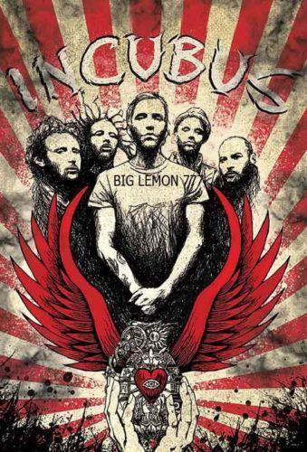

Incubus
Incubus es una banda de rock alternativo13 estadounidense formado por el vocalista Brandon Boyd, guitarrista Mike Einziger y batería José Pasillas cuando estudiaban juntos y después expandienron con la inclusión del bajista Alex "Dirk Lance" Katunich,y Gavin "DJ Lyfe" Koppell; ambos reemplazados finalmente por Ben Kenney y DJ Kilmore respectivamente. Para el 2001 tuvieron un enorme éxito con el sencillo "Drive", seguido de su álbum Morning View. Hoy permanecen como una de las bandas más populares del mundo con el lanzamiento de su último álbum If Not Now, When? y su penúltimo álbum Monuments and Melodies alcanzando disco de oro.
